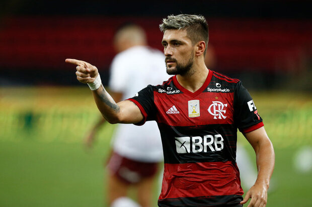
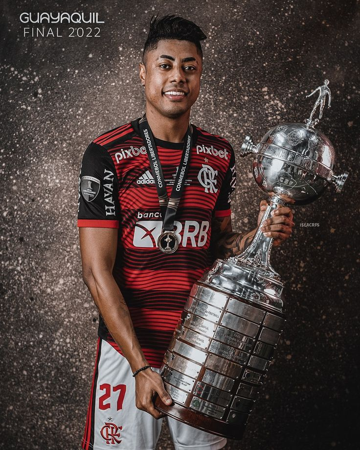
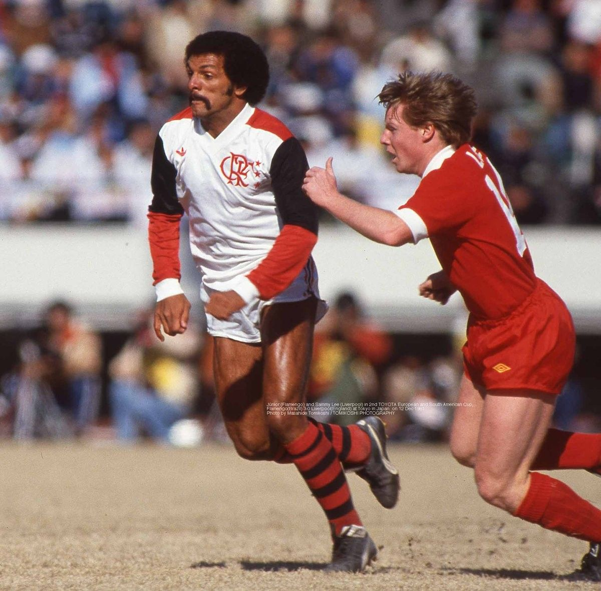
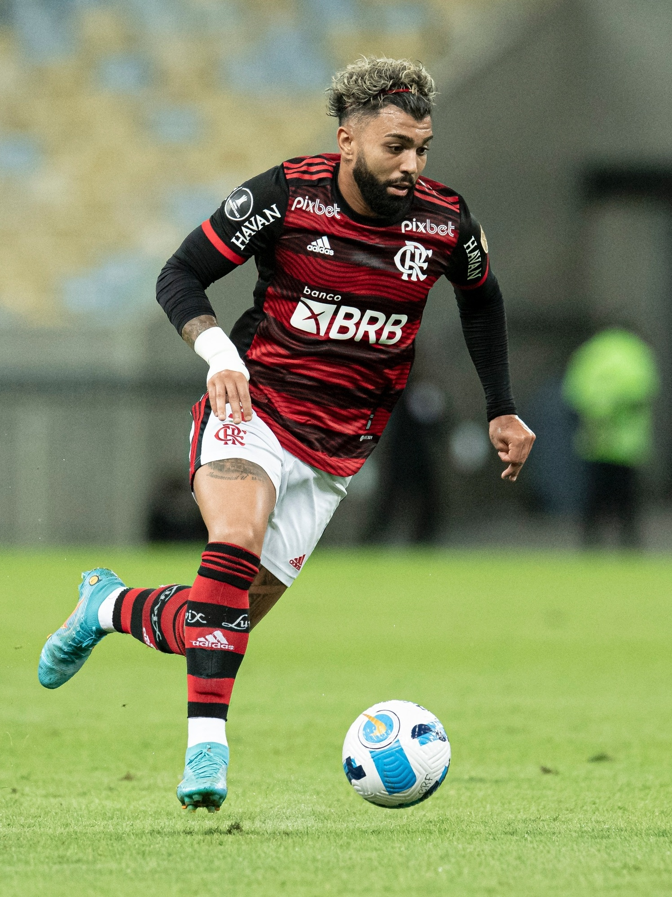

Zico
O Galinho de Quintino. Técnica e cobranças de falta que encantaram a Nação.
NAÇÃO RUBRO-NEGRA
01 / GALERIA DE ÍDOLOS
Conheça cinco jogadores que marcaram diferentes gerações da torcida.
O Galinho de Quintino. Técnica e cobranças de falta que encantaram a Nação.

Criatividade no meio-campo. O uruguaio faz do último passe uma arte.

Velocidade e presença no ataque. Um nome marcante da geração de 2019.

O Maestro. Classe e liderança como lateral direito, lateral esquerdo e também no meio-campo.

Gols em decisões. Uma história ligada às Libertadores de 2019 e 2022.
02 / HISTÓRIA
Fundado em 1895 como clube de remo, o Flamengo iniciou sua trajetória no futebol em 1912. O vermelho e o preto se tornaram símbolos de uma torcida apaixonada.
Zico foi protagonista de uma geração histórica. Em 1981, o Flamengo conquistou a América e venceu o Liverpool por 3 a 0 no Mundial.
Arrascaeta passou a vestir o Manto em 2019. Sua técnica no meio-campo ajudou o time a conquistar a Libertadores e o Brasileiro daquele ano.
Bruno Henrique foi um dos destaques do Flamengo na campanha de 2019. Suas arrancadas e seu jogo aéreo se tornaram marcas do atacante.
Júnior brilhou como lateral e meio-campista. Ligou duas gerações de conquistas: a equipe de 1981 e o time campeão brasileiro de 1992.
Gabigol ficou na memória da torcida por decidir as finais da Libertadores de 2019 e 2022, com gols que garantiram os títulos.
03 / CONQUISTAS
| Ano | Competição | Adversário na decisão | Destaque | Alcance |
|---|---|---|---|---|
| 1981 | Libertadores | Cobreloa | Zico | Continental |
| 1981 | Mundial | Liverpool | Zico e Júnior | Mundial |
| 1992 | Brasileiro | Botafogo | Júnior | Nacional |
| 2019 | Libertadores | River Plate | Gabigol | Continental |
| 2022 | Libertadores | Athletico-PR | Gabigol | Continental |
| Conquistas selecionadas até 2022. | ||||
04 / CURIOSIDADES
Clique em cada pergunta para abrir ou fechar a resposta.
É Zico, um dos maiores símbolos da história do Flamengo.
Arrascaeta é uruguaio.
O atacante chegou ao Flamengo em 2019.
Júnior, que atuou como lateral e meio-campista.
Gabigol fez os dois gols do Flamengo na vitória por 2 a 1 contra o River Plate.
O Flamengo venceu o Liverpool por 3 a 0, com dois gols de Nunes e um de Adílio.
05 / ESPAÇO DO TORCEDOR
Formulário do torcedor